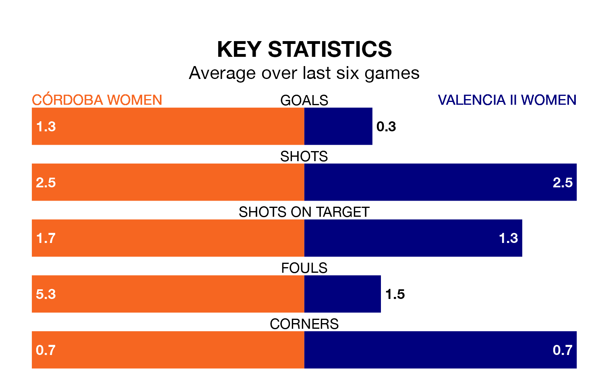

Mid-season relegation candidates Valencia II Women face a challenge away against high-flying Córdoba Women on Saturday.
Valencia II Women are rooted to the bottom of the Segunda Federación Femenina table, and have picked up seven wins and four draws in their 19 games to date.
Córdoba, meanwhile, are zero in the standings with 22 points, having won six and drawn four, and are 26 points behind table-toppers Real Madrid II Women.
Córdoba are in mixed form in the Segunda Federación Femenina, with two wins and a draw from their last six games.
With a win and three draws over that period, Valencia II's form is slightly worse – they have taken six points from 18, compared to the hosts' seven.
With 20 goals in 19 games so far this season, the away team are the league's joint--6th-lowest scorers with 1.1 goals per game. And they are conceding at an average rate, letting in 24 goals at a rate of 1.3 per game.
Córdoba are also below average scorers, with 1.1 goals per game, compared to a league average of 1.3. They have conceded 1.5 goals per game.
Córdoba's last match was on Sunday, a 4-0 win against Cacereño II Women, with getting the goals for Córdoba.
Valencia II drew 0-0 with Unión Viera Women last time out, also on Sunday.
Updated: 11:43 (UTC), 08/02/24